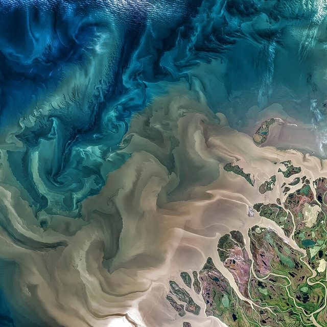

Pular para o conteúdo

Delta
Álbum de Maré Alta Trio, 2026
Tocar
Aleatório
Maré de Março
Maré Alta Trio
3:48
2
Foz
Maré Alta Trio
4:12
3
Sedimento
Maré Alta Trio
3:05
4
Água Doce
Maré Alta Trio
2:59
5
Mangue
Maré Alta Trio
4:30
6
Correnteza
Maré Alta Trio
3:33
7
Banco de Areia
Maré Alta Trio
3:51
8
Estuário
Maré Alta Trio
5:14
9
Vista de Cima
Maré Alta Trio
2:44
10
Mar Aberto
Maré Alta Trio
4:47
Maré de Março
Maré Alta Trio
Tocar em seguida
Adicionar à fila
Adicionar à playlist
Curtir
Ir para o álbum
Ir para o artista
Ver a letra
Em breve
Timer para dormir
Em breve
Baixar
Em breve